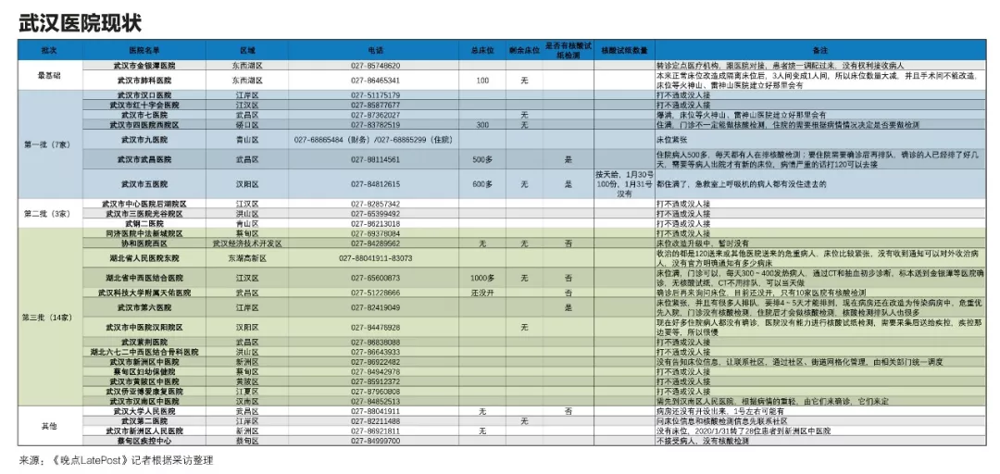

《财经》采访的10余位病患家庭，多数全家感染。他们还搀扶着病危的老人、孕妇辗转在各家医院，他们的家人们处于生死一线《财经》记者 房宫一柳 黎诗韵 刘以秦 信娜 实习生马可欣 | 文2020年1月26日，刘梅一家接到了一张火化单。她的婆婆、73岁的老人在家中没了呼吸，送去医院抢救无效后死亡。刘梅告诉《财经》记者，老人在1月21日出现疑似新型冠状病毒肺炎的症状，在武汉市第四医院检查后诊断结果显示肺部高度感染。但老人辗转数家医院仍未被住院收治，只能在家自我隔离，直至病危。老人被送上救护车后，家人再没见过她。他们最后收到的只有一张火化单，显示老人的死亡原因是：病毒性肺炎。但据家人说，老人的离世并未被计入新冠肺炎的确诊死亡数字中——因为直到去世，她也没有得到住院资格，也没有被确诊为新冠肺炎，只能被算作因“普通肺炎”而去世的不幸者。老人仓促离世，没有体面的收拾、没有家属的送别，至今骨灰还在殡仪馆里。刘梅家得不到救治而离世的亲人并非孤例。《财经》记者多方调查了解到，尽管目前武汉各大定点医院发热门诊的就医人数比1月23日刚“封城”时有所下降，定点医院也已开至第三批，但一床难求的情况并没有完全得到缓解。确诊、疑似数字攀升的同时，仍有很多疫情统计数字之外的人命悬一线。一位定点医院的科室主任告诉《财经》记者，这两天医院门诊一天有120名左右发热病人，其中大约80名有肺部感染，但只有5名可能最终被收住院。“我们只能让剩下75名收不进来的病患，回到家里去。患者没办法，我们也没办法。”该主任告诉《财经》记者。这名主任说，一般来说，双肺CT呈毛玻璃状病灶，基本可算作疑似，但只有被收治入院的患者才能统计为疑似，才有资格做核酸试纸检查。做完核酸试纸检查的患者其中至少80%能被确诊，之后即被转去其他定点医院。《财经》了解到，该医院已有至少5起死亡疑似病例是未被确诊的，因此也不计入确诊死亡人数中。这意味着，目前人们所能看到的确诊、死亡病例数字，并不能完全反映这次疫情的全貌。
（点击可查看大图 武汉各大定点医院现状，信息经《财经》记者及志愿者反复核查）从目前的调查来看，患者主要有两条路径可以入院。一是靠社区排队：1月24日武汉社区分流政策实施后，病人需要拿着住院单入院——病患先去社区交CT、血常规报告，社区上报街道，再根据轻重缓急对接医院的新开床位；二是去有核酸试纸的定点医院，48小时拿结果，确诊后就不能被医院拒收。要走通这两条路径并不容易，每一条都可能是无尽的等待。但对于重症患者来说，每一分钟都可能是生与死的煎熬。《财经》近日先后采访的10多位病患家庭，多数家庭全家感染，他们还搀扶着病危的老人、孕妇辗转在各家医院。“医院告诉我们只能自救。”多位患者家属告诉《财经》记者，他们的家人正处于生死一线。截至2020年1月31日24时，湖北省累计报告新型冠状病毒感染的肺炎病例7153例。其中武汉市3215例。WHO（世界卫生组织）的Twitter主页上有一句话：记住，这些都不是数字，而是真正的人。不幸的是，还有一些未被囊括进去的人，他们的生死故事都在统计之外。“父亲不停说，自己没有死在70年前的战场，却可能死在医疗资源调配失控的现在。”“医生明确说了，父亲是新型冠状病毒，但因为没有检测盒无法确诊。“孙晨告诉《财经》记者。孙晨说，1月26日，在家自我隔离的父亲突然咳血。孙晨慌忙将父亲送去华中科技大学同济医院做了检查，检查结果显示：肺部中重度感染。但这份CT检查并没能让父亲得以入院治疗，因为没有经过完整的确诊流程。医院让孙晨父亲在家里隔离、吃药，但孙晨意识到，“我身边的例子都很严重了，我一定要把父亲送到隔离病床上去。”床位意味着什么？因为没有床位，家住汉阳的李开蒙在家里眼看着父亲艰难呼吸了一晚上，最终咽了气。他的父亲生前是一位军人转业干部，是家里的顶梁柱。父亲不幸去世后，殡仪馆的车过了十多个小时才到，他们也很忙，一趟得拉好几个。家在武汉的铁路职工陈力的奶奶，也因为没有病床，在汉口医院的门诊大厅坐了三天，最后没有撑住，抢救无效去世。奶奶同样没有经过确诊流程，也不计入统计数据。一家定点医院医生告诉记者，新冠肺炎没有特效药，对于中度、轻度患者，门诊和住院的治疗方式本质不会差太多。但对于重症病人来说却有很大区别。对于那些一直在家隔离、但身体已经难以支撑的病人来说，住进医院成了他们最后的希望。“医生建议我和爸爸都想办法去住院，特别是我爸爸不能拖下去了，随时可能有生命危险。”从1月27日开始，杜红利的父亲开始吃不下饭、说不出话。武汉梨园医院检查结果显示，杜红利的父亲双肺毛玻璃状病灶严重，肺部斑点明显，血氧只有90，表明患者出现严重缺氧的症状。杜红利带着父亲，把所有方法都试了一遍。1月27日，他去社区做了登记，一直没有消息。他自己也是肺部感染，还发着低烧。他向朋友借了一辆面包车，强撑着带父亲到处寻找医院收治。有300多个床位的武汉672医院，没有住院单不让进；新开放的有700个床位的武汉协和医院汉阳分院也告诉他：要等。1月28日，杜红利赶到区政府信访办，得到的答复还是没有床位；找卫健委，对方回复称没有办法解决，只能等。因为没有办法跨区域协调病人，只能等所在区域的对口医院收治。杜红利的父亲曾参军15年，上过抗美援朝的战场，曾是两位高级将领的贴身警卫。杜红利告诉《财经》记者，现在全家被感染，自己头晕胸闷的症状也越来越厉害，不知道还能带着父亲扛多久。杜红利的父亲曾参军15年 上过抗美援朝的战场
他父亲不停对他说，自己没有死在几十年前的战场，却可能死在医疗资源调配失控的现在。“每天看见医院门口除了120的车，就是殡仪馆的车，只剩绝望和无助。”父亲不便挪动，杜红利每天带着父亲在协和医院汉阳分院门诊打针，睡在医院旁的宾馆。或是一早就去武汉同济医院、协和医院排队领试纸，但是每天协和试纸限量100份，往往一过去已经没了。直到记者发稿，杜红利的父亲也没能住进医院，因为仍然没机会经历完整的确诊流程。武汉市民王女士告诉《财经》记者，母亲已经在家休克过两回了。母亲年前开始一直在社区打针吃药。1月23日母亲感到身体异常难受，便和父亲一起骑车去了汉口医院，排队12个小时才做完CT，结果显示：双肺感染。王女士说，当时医院没有点滴可打，就连抵制流感的药物“奥司他韦”也不够了，只能给母亲开了儿童剂量的药。之后母亲只能回家自我隔离，靠着家里的吸氧机度日。“有一次我妈妈休克了，我爸爸就抱着我妈妈哭，以为她过去了。”之前，两位老人家“能自己解决的事绝不麻烦别人”，但接连两次晕厥，让他们不得不拨通女儿的电话。但此时，王女士和丈夫也都感染了，她要照顾高烧不退的丈夫，自己的双肺也出现了毛玻璃状症状。过不去已经被封路的父母家，王女士为父母拨打了120，但是前面排队将近500人。“当时120说前两天打的人都没有送进医院去，没什么希望。”熬到当天下午三、四点，两位老人已经全身乏力，但还是挣扎着骑上自行车去医院。王女士继续拨打市长热线。第二天，市长热线反馈：“你要找你的社区上报，社区给街道反映，街道给指挥部反映。如果有床位了，指挥部会通知医院安排，然后再安排你们去。“华中科技大学中国基本医疗保障研究中心副主任姚岚教授对《财经》记者表示，发挥基层卫生服务体系的作用，实行真正的分级诊疗，是避免人群扎堆医院、防止交叉感染的有效措施。但是对于重症者来说，每一分钟都是生与死的煎熬，他们不知道社区的上报和等待需要多久。“从头到尾社区我们都有上报，他们都表示说没有办法，只是说在反映，但什么时候是个头？”王女士说。在这期间，他们试了所有能拨的电话、能找的关系，王女士甚至还打了110，最后110给了她一个固定电话，打过去对方说必须要跟社区联系。1月29日，王女士感到爸妈已经撑不下去了，王女士不得已再次求助120。120明确说，只有联系好医院的床位，才能派车过来。王女士想起在网上看到的，华中科技大学协和西院区加了700张床位，于是劝说120带着父母去了协和西院。到医院已是晚上9点，120急救人员说，“（医院）人非常多，急诊室外面都躺满了人，而且并没有急救设备，排队有可能会排不上你。”关于那700多张床位，据说因为医生的防护服不够，暂时不能全部开放，“因为一旦开放了，医生没有设备上去也会感染。”120急救人员让王女士赶紧选第二家医院，她恳求救护车把父母拉到武昌医院。她也拿着被子、暖手宝过去，到了医院，王女士自1月20日之后第一次见到了父母。他们脸色苍白，父亲高烧39度多，站都站不稳，母亲躺在救护车里吸氧。没有床位，医院不收。120的人在旁边催促，他们已经在这家人身上花了三小时。这时，她的母亲做出决定。她双手合十对急救人员说：“我死也要死在家里，我不再出门了，已经没有希望了，求求你们把我抬回去吧。”120让王女士签完字，重新把她母亲带上车，关上了车门。看着救护车驶离，王女士再也忍不住。她蹲下身子，坐在被子上嚎啕大哭。武汉某定点医院一位医生称，该院收了600位重症病人，但无一确诊。“缺试纸，但我们也搞不懂为什么会缺。”
《财经》记者了解到，目前只有两种路径可被收治入院。一是靠社区排队，病患先去社区交肺部CT、血常规报告，社区上报街道，再根据轻重缓急对接医院的新开床位，病人需要拿着住院单入院；二是去有核酸试纸的定点医院排队，48小时拿结果，确诊后就不能被医院拒收。1月24号，武汉市新冠病毒疫情防控指挥部发布7号通告要求，发热居民需进行分级分类筛查。社区是此次疫情的承压阀。武汉市规定，个人发热需要向社区网格员汇总，报社区居委会，再上报社区卫生服务中心，接着轻症者自行前往或居家观察，而重症者救护车接送，去往定点发热门诊。作为武汉花桥街某社区的一名社工，王木从除夕开始，连轴转了8天。他们每天会跟踪发热居民的状况。4点前，王木需上报社区内发热病人的名单，其中单独一份为发热重症病人名单。这份名单将上传至街道及所在区，评估后，社区能够得到通知，“哪位病人，什么时间，可以到哪家医院治疗”。根据《财经》在武汉一线的记者获取的社区上报标准如下：发热人员的标准是：1.发烧37.5度以上；2.咳嗽；3.乏力。疑似人员的标准是：1.CT检查结果为双肺毛玻璃样改变；2.血常规检查白细胞异常；3. 含发热人员标准。重症人员的标准是：1. 血氧饱和度降低；2.呼吸困难；3.有基础疾病；4.年龄偏大、体质弱者；5.含发热和疑似人员标准。事实上，很多病患家属告诉《财经》记者，就算社区和医院都建议患者立马住院，仍不保证有床位可以住进去。传染病对隔离的要求，使得医疗资源空前紧张。以往有着上千床位的医院，设置隔离单间以后，床位可能只剩下原来的三分之一甚至不到。武汉某定点医院一位医生告诉《财经》记者，该定点医院就有大量拿着住院单排队等候，但因为床位紧张无法住进来的病例。王木所在社区的负责人告诉《财经》记者，仅30日一天，他就有100多条通话记录。电话那头，会突然传来痛哭，或者呼喊，“我只能尽量安慰他们，每天心情好点，免疫力提升，身体也会好起来”，该负责人说。另一条住院路径——病患去定点医院排队确诊之路，也颇为漫长。刘梅说，她的婆婆去世后，她的大哥、二哥和自己老公也被感染，病情加重，急需住院。他们2月1日去同济医院排队领核酸试纸，被告知一天只有10份。截至发稿前，武汉市共10家机构可进行病原核酸检测，分别是：武汉市金银潭医院、武汉市肺科医院、华中科大附属同济医院、华中科大附属协和医院、湖北省人民医院、武汉大学中南医院、武汉市第一医院、武汉市中心医院、武汉市第三医院和武汉市疾病预防控制中心。武汉某定点医院一位医生告诉《财经》记者，该院收了600位重症病人，但无一确诊。“缺试纸，但我们也搞不懂为什么会缺。”什么样的患者才能用上核酸试纸？武汉市第三医院的医生称，医院进行检查后，如果医生认为需要住院治疗，患者才能住院并做核酸检测。中南医院一员工表示：“申请做核酸检查只能让医生开疑似病例报告卡，但只有很紧急的情况才会填写这个报告卡。”但什么才算“很紧急情况”，《财经》记者询问多处，并未获得准确答案。不少患者和医生的困惑是：1.武汉卫健委在27号称，原则上每天可检测样本近2000份，但为什么总是缺少核酸试纸？2.做了检测也无法第一时间出具确诊报告。据第一医院的医生说，检测需要一天的时间，“今天做了，明天能知道一个大概的结果”，但问题是第一医院无法发出确诊报告，而目前定点医院只能凭报告才能接收病人入院。当记者问到哪些机构能出确诊报告时，该医生表示：“这我也不清楚，也许同济、协和可以。患者病情越来越重，也是因为拿不到这个确诊报告，就没有床位。”对于疑似病患数据的统计，医生的判断标准是“低热、咳嗽、肺部CT结果”。上述定点医院医生说，他会上报给科室，但后面的统计过程他并不了解。而另一家定点医院的主任告诉《财经》记者，被收入的重症病患才能算疑似，需要确诊进一步治疗。1月30日，武汉某定点医院开始上报需要确诊检测的疑似病患人数，从科室、到医院、到区再到市里层层上报。该医院一位医生表示，如果没有确诊就去世，不会被计算为确诊死亡人数，只能算“肺部感染死亡”。“就我自己所在的科室，死亡率比出院率高很多。同时，很多治愈出院的病例不能算真正的治愈，还需要长期观察。”上述医生说。这也意味着，有大量的病患在确诊流程和统计数字之外，只能自我求生。市民李莉告诉《财经》记者，经过社区人员联系，她的父亲终于住进了武汉第八医院。但第八医院不是定点医院，此前是专门的肛肠医院。医院诊断说，父亲双肺已经感染坏死，氧气已经打到最高限度，需要让他尽快转到定点医院，但因为第八医院没有测试盒，所以病人一直无法确诊，而无法确诊也就无法转院。“第八医院已经上报好多天了都没有任何回复，”李莉说，她拨打120，120的回复是，只能通过社区上报转去定点医院，但之前的第八医院就是社区千辛万苦才安排住上的。截至发稿，记者逐一拨打了武汉市定点医院的电话，接通的7家医院均表示“暂时没有床位”。“如果有可能的话，把轻症患者集中起来隔离和治疗，这样可以更有效控制疫情”在无数患者家属眼里，武汉在快速建设的火神山、雷神山医院是他们仅存的希望。《财经》记者采访得知，2月3日，设置1000个床位的火神山医院按照计划必须竣工，但具体开放时间需要物业、电力、医药设备等配合。目前《财经》记者采访的多数医院尚未收到转移病患的通知。等待火神山、雷神山医院开门的这几天，就是一些重症病人的生死关。据《财经》记者了解，即使确诊并获得社区住院单，也不一定就能第一时间住进医院。两个火神山、雷神山医院加起来也就2000个病床，还不够湖北省两天的新增病例使用。微博公开求助，成为一些人最后的尝试。一位住在武汉市江夏区纸坊机关幼儿园附近的孕妇家属告诉《财经》记者，家中孕妇怀孕8个月，最新诊断结果显示：双肺重度感染。但定点发热门诊不收孕妇，门诊也没有胎心监护，区妇幼和省妇幼则不收发热病人。家人发微博求助几天后，1月31日他们得到了社区和区政府的关注，被社区车辆载着往返跑了几家医院，2月1日上午总算住进了武汉大学人民医院东院。对这个家庭来说，这是好消息。但对于另一些家庭，这个消息让他们心情复杂。“已经到了谁喊得响亮，谁才能活下去的时候了吗？”一位病患家属对《财经》记者说。能找到床位的，都被称作“幸运儿”。刘小青一家有六人患病，只有三位住到了医院，“更多是靠自己托关系、找渠道。”刘小青一家可能在一次家庭聚会上被感染。1月18日疫情还被认为不会“人传人”，他们一起在外面吃了年饭。之后不久家人陆续发烧，从父母、小姑妈到90岁的奶奶，再到已回的大姑妈和大姑爹。1月21日，刘小青的母亲去做了CT，显示双肺病毒性感染。这之后，母亲连续高烧了四天，几近晕厥，“我们联系了很多人，才找到汉口医院那边，有一个床位让她住进去了。”到了1月28日，她的奶奶开始发病，辗转汉南医院、协和西院，未能住成院。奶奶排了一天门诊，终于打了上针，结果却“立刻浑身颤抖像癫痫一样，无法正常行走和说话”。医生留她在留观病房吸氧，但回家后，奶奶仍然呼吸困难。“我们找了很多人才能够住到第六医院的ICU。当时我们也是一直在催社区，催协和医院那边，但是没有得到反馈和消息。”她的父亲也在打完针后呼吸困难，用上了吸氧机。刘小青把情况发到了微博，等到第二天七点起来，接到了一些有用的信息，让父亲住上了ICU。父亲说，别人可能会觉得他们发微博求救，最后能住院是一种医疗不公，“但毕竟生命要紧。”后来，她把微博删了。1月29日凌晨4点，家住武汉市江汉区万松街商一社区的陈晓薇，拖着病体去医院排队，终于在协和医院排上了试纸。2月1日试纸结果送达，显示陈晓薇是“双阳（确诊）”，但当她和家人前往社区准备领取住院单时，他们看到商一社区服务点里明明有人，就是不给开门。家人只能选择报警。警察没到，是社区所属的街道办找到了解决办法。陈晓薇说，就在今天下午，街道办帮他们在协和找到了一张床位。“终于有救了。”她说。晚间，当陈晓薇和丈夫抵达协和西院准备住院时，被告知需要转去红十字会医院。截止发稿，他们仍然在红会医院观察室等候床位。 华中科技大学保障中心副主任姚岚教授说，她看到澳门征用了离人群较远、相对独立的酒店，作为有湖北接触史的人群隔离集中管理区。她建议湖北及其它地区也可采取类似举措，有效控制好疑似病例。中南医院急救中心主任助理、急诊外科主任沈俊告诉《财经》记者，中南医院都是收治很重的病人，“属于生命体征很不稳定的患者（氧合差、心率快，呼吸频率快，发生呼吸窘迫综合征的病人）”。床位短缺，疑似或轻症的都在家隔离。沈俊所在的中南医院团队用ECMO（移动心肺仪）成功救治一名重症患者 为全省首例
据悉，医院基本没有床位了，急诊科也用来收治病毒肺的病人，急诊留观室也满了，“基本上病房空出来一个，留观室就进一个到病房。“沈俊说，床位分配并不能满足社区的要求，而是评估病人的情况，“比方说有的病人自己被家人送到医院了，病很重了，留观室有空床了，就先留观，我不可能让他回去排队，等社区报上来我再安排。或者我不收他，然后把社区上报上来的比较轻的病人收住院，肯定不可能的。”关于检测盒，他表示中南医院发热门诊可以做核酸检测，大概2小时就可以出结果，但因试剂盒有限，需要肺CT有病毒性肺炎表现的患者才能做。沈俊建议，如果有可能的话，把轻症患者集中起来隔离和治疗，这样可以有效的控制疫情。他还建议在家的患者服用两种药，抗病毒的以及抗感染的，发烧超过38.5℃就退热，“因为目前没有特效药物去治疗这个疾病，不能网上跟风，说什么药就买来吃，住院治疗也是对重症患者提供支持治疗，如果能够扛过这个时间的话，就过去了，就是这样。“沈俊和武汉肺科医院ICU的胡明医生做完手术后汗流浃背
这两天他接诊了一位45岁的病人，病人一家五口，父母两个皆因新型冠状病毒肺炎去世了，儿子也感染了。病人的情况十分严重，用了高流量吸氧和无创面罩通气，但血氧饱和度还只有50%，最后不得已给她麻醉插管，上了ECMO（体外膜肺氧合）。“在插管麻醉前，她看着我们做准备，眼泪不停地往下流，那种恐惧让人看到很心疼，”沈俊说，像这样的情况还有很多，“我们医生都下定了决心，要尽全力救治所有的病人。一直和父亲在等待核酸检测试纸的孙晨不允许自己再失眠和哭泣了，她知道自己还得继续催社区，找医院，还得给爸妈做饭，太多事要做了，不能倒下。她期待火神山和雷神山快点建好，“必须得住进去了，这是我们最后的希望。”（文中刘梅、孙晨、李开蒙、陈力、刘小青、李莉、王木为化名，实习生张凡、志愿者耿鹏对本文亦有贡献）
责编 | 黄端 duanhuang@caijing.com.cn
本文为《财经》杂志原创文章，未经授权不得转载或建立镜像。如需转载，请在文末留言申请并获取授权。
 sharedownload .zipreport error or abuse
sharedownload .zipreport error or abuse